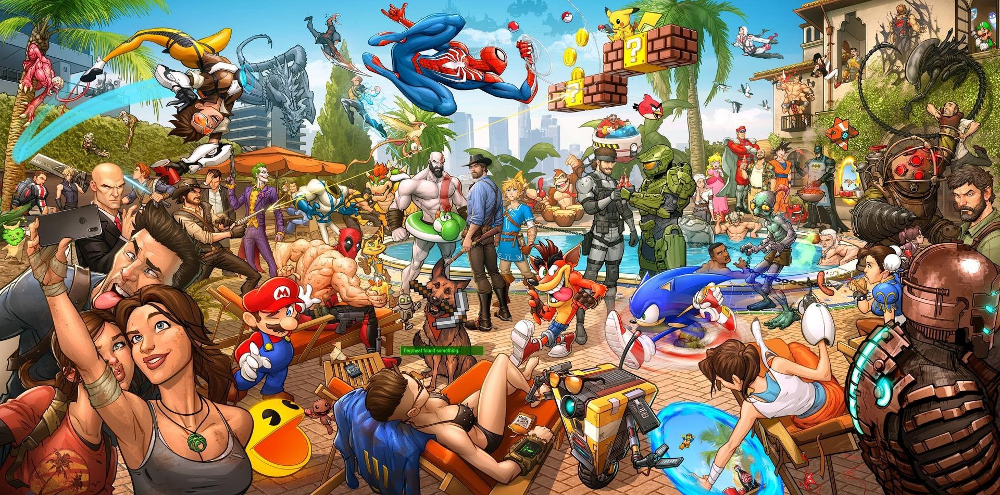

A Little About Me
I've been playing videogames ever since I got out of the womb. My first console was my brother's PS2 and this brought my love for sports games like WWE: Smackdown vs. Raw and NBA Live. Ever since then, I've moved on to new gaming systems like the 3DS, PS3, PS4, PS5, mobile gaming, and PC gaming. I fell in love with different genres of video games and explored the various character models that developers make.
Unlocking a new character in video games became almost like collecting different trading cards. Not everyone enjoys video games but everyone loves a story with great visuals and characters.
Countinue to browse through my pages to see some of my favorite video game characters and learn a little about their backgrounds.
